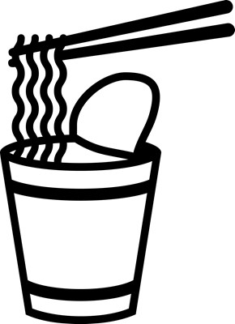

ABOUT
THIS
SITESこのサイトについて
このページって？ーWhat's this page?
ここ（https://obasanz087.netlify.app）のあれこれについて記載しています。
カップラーメンを作っている間のお供にどうぞ。
つくった経緯ーWhat for made the website?
2022年の4月に念願だった佐山県に入ることができて、自分も晴れてTwitterでマイクラのスクショたちを投稿(ついでに承認欲求も満たし)し始めたのですが、雑多垢なので他の画像ですぐ埋もれちゃうという問題がありました。
別に大した問題じゃないだろと言われればその通りではあるのですが、作ったものをギャラリーみたいに後から見れたらなぁと思い、ちょうど興味のあったHTMLやCSSを駆使してこんなものを作ってみた次第です。慣れないGithubを使う羽目になりましたがなんとか公開できたのでOKです！！
なおPHPなどはわからないのでコード直書きで更新するパワープレイでやっています。暇なときにしているので頻度はまちまちですが、のんびりとやっていきたいです。
↑ かつてのサイト
きっかけなどーTrigger
まだカップラーメンはできていないと思いますので、マイクラ始めたきっかけでも駄弁ってみます。
初めて知ったのは2015年とかそれぐらいで、当時流行ってたカズクラとかだと思うんですが、買ってもらってやり始めたきっかけは佐山県でした。当時はWiiUのブラウザでYoutubeをこぞって見ていたのですが、ちょうど同じ時期にWiiU版のマイクラも発売されて、当時はマイクラをやれという神のお告げなのかと勘違いして始めてしまいました。
やり始めたきっかけがクリエ現代都市ワールドからなんとなく察しがつくように、サバイバルはほっとんどやったことがありません。WiiUでもSwitchでもPCでも専ら建築です。
↑ Miiverseのアーカイブから拾ってきました 有志の人に感謝🙏
2016年の11月に作ったみたいです
↑ Switchのほうでだいぶ前に作ってたやつです
（完全に余談なんですが、MiiverseをアーカイブしたサイトのArchiverseがおもしろいです。過去に投稿していた方とかはとくに黒歴史がえぐられるので是非）
現代建築の沼は思ってたよりもだいぶ深くて、気づかぬうちに自転車で移動している最中ですら建物や風景を観察しちゃうような人間になってました。ちょっとした街歩きですら楽しく感じれるぐらいにはなるのでおすすめです。
なんか気づいたら現代建築のすゝめみたいになってしまっていますが、きりが良いのでここらへんで、ここまでありがとうございました！